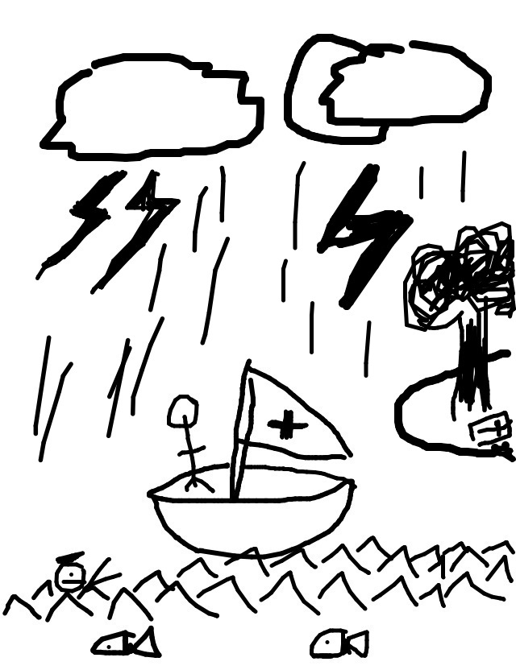

so rickyc drew...
so jason wrote...
Unable to overcome the tragedy suffered during the nuclear attack, Christopher colombus threw his only remaining shipmate overboard to be devoured by fish. And it was rainy.
so tasia drew...
so jackcheng wrote...
He screamed for help but all she did was laugh, sheltered from the hail in her (now) private banana boat.
so mike drew...

so irondavy wrote...
The river Styx is notable for its knife rain and tall demons with terrible breath.
so tag drew...
so matt wrote...
Man, I'm glad the didn't go with this alternate ending to Children of Men. A knife-throwing demon and mMary showing up to save them? Lame.